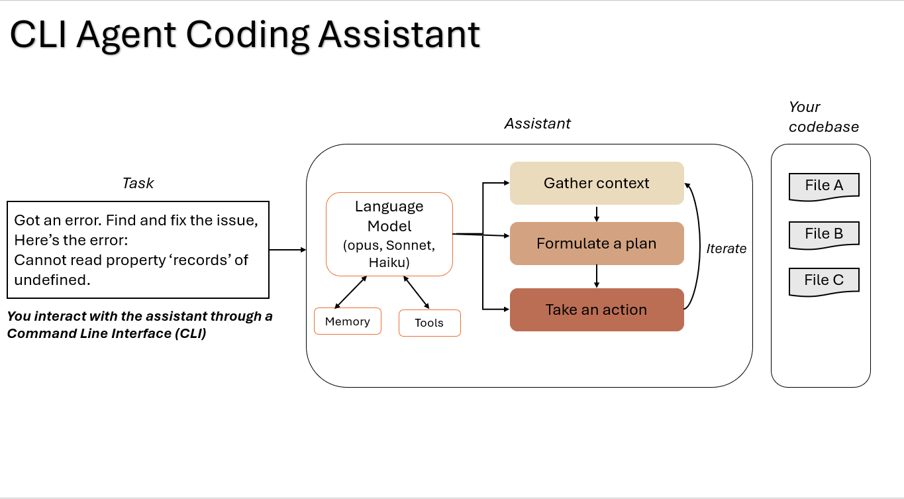
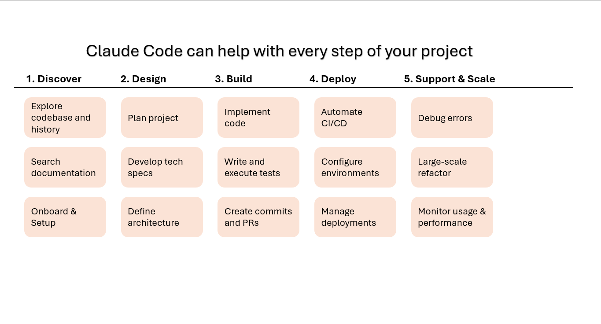

Module 1 — Episode 2
Training:Claude Code - A Highly Agentic Coding Assistant
Course Level: Beginner → Intermediate
🎯 What You'll Learn
By the end of this episode, you will:
- ✅ Understand what Claude Code is and how it differs from a regular language model
- ✅ Learn how Claude Code uses tools, memory, and environment context to act agentically
- ✅ Explore how to use Claude Code for code exploration, visualization, and explanation
- ✅ Understand how MCP servers extend Claude Code’s capabilities
🧭 Quick Overview
The Big Picture:Claude Code is not just a model—it’s an agentic coding environment that combines a large language model (LLM) with tools, memory, and an execution environment. This allows it to autonomously plan, navigate, and act within your codebase.
What Problem Does This Solve?- Traditional LLMs can’t see or navigate your codebase.
- Developers waste time copy-pasting files or context into prompts.
- Claude Code provides a lightweight harness that gives the model access to tools and memory—enabling true agentic behavior.
- Rapidly understanding unfamiliar codebases
- Debugging and refactoring large projects
- Generating visualizations or assets directly from the terminal
🧱 Prerequisites & Background
You should already know:- Basic command-line usage
- Familiarity with VS Code or similar editors
- General understanding of LLMs and prompt-driven workflows
→ Start with [Episode 1: Introduction to Agentic Coding Workflows] for foundational setup and CLI basics.
🔑 Core Concepts Explained
Concept 1: The Agentic Harness
Definition:A lightweight runtime environment that wraps the Claude model, providing it with tools and a context in which it can plan and act.
Why It Matters:Without this harness, the model can only respond to text—it cannot read files, execute commands, or remember prior actions.
When To Use:Whenever you want Claude Code to perform multi-step operations like exploring a repo, editing files, or running shell commands.
Concept 2: Tool Use
Definition:The mechanism by which Claude Code performs real-world actions—reading files, editing code, searching patterns, or executing shell commands.
Why It Matters:This transforms Claude from a passive assistant into an active agent capable of reasoning about and manipulating your environment.
When To Use:When working with large codebases, automating repetitive edits, or when you need Claude to gather data autonomously.
Concept 3: Memory (CLAUDE.md)
Definition:A markdown file (claude.md) that stores persistent preferences, context, and configuration for Claude Code sessions.
It allows Claude to remember your coding style, project conventions, and conversation history—without sending your data externally.
When To Use:For maintaining continuity across sessions, enforcing style guidelines, or defining reusable project-level context.
Concept 4: Model Context Protocol (MCP)
Definition:An open-source protocol that enables Claude Code to connect to external servers (e.g., GitHub, Playwright, Figma) for additional capabilities.
Why It Matters:You can extend Claude Code’s native functionality—adding new tools for testing, deployment, or design integration.
When To Use:When you need Claude Code to interact with third-party APIs or perform specialized tasks beyond built-in tools.
🏗️ Architecture & Flow Diagrams
System Diagram
 What This Shows:Claude Code acts as a bridge between the user, the model, and the local environment. The harness coordinates reasoning, tool invocation, and memory persistence.
Claude Code Capability
 What This Shows:This image showcases what all can be done usign the claude-code setup.
Workflow Sequence
 Key Takeaway:
Key Takeaway:
Claude Code plans tasks, executes them via tools, and interacts with your environment—allowing seamless automation from prompt to output.
⚙️ Technical Deep Dive
How It Works: Step-by-Step
Phase 1: Setup & Initialization1. Launch Claude Code in your terminal:
claude
2. Trust the workspace when prompted (first-time setup).
3. Claude loads your claude.md memory file and initializes tool access.
1. You enter a natural-language task (e.g., “Make a cool visualization”).
2. Claude Code formulates a plan and displays actionable steps.
3. It uses built-in tools (read/edit/run) to perform operations.
Phase 3: Output & Integration1. Changes appear visually in VS Code.
2. You can preview, approve, or auto-accept future edits.
3. Outputs can be opened, executed, or extended interactively.
Why This Design Works
Underlying Principles:- Agentic Autonomy: The model can plan and act, not just respond.
- Tool-Oriented Execution: Decouples reasoning from environment control.
- Local Privacy: Code never leaves your machine.
- Local data remains private.
- Memory (
claude.md) persists across sessions. - Tools are sandboxed to your environment.
✅ When To Use This Feature
Ideal Use Cases
✅ Perfect For:- Exploring unknown codebases
- Refactoring or debugging complex projects
- Generating visualizations or quick prototypes
- 3–5× faster context gathering
- Reduced manual searching and file navigation
- Consistent memory and style adherence
Anti-Patterns: When NOT To Use
❌ Avoid When:- You need static, one-off code snippets (use chat instead)
- Working in environments without local file access
- Forgetting to load/update
claude.md - Overloading context with irrelevant prior sessions
🔧 Practical Implementation Guide
Step 1: Launch Claude Code
claude
Starts the Claude Code CLI session and loads your local memory file.
Step 2: Run a Simple Task
claude "Make a cool visualization for me"
Planning steps...
1. Create visualization file
2. Add particle animation
3. Open in browser
Step 3: Approve & Execute
Claude Code will show file diffs in VS Code. Approve them to apply changes and view results directly in your browser.
💡 Practical Tips & Tricks
Pro Tip 1: Use Plan Mode for Transparency
The Technique:Press Shift+Tab twice to preview Claude’s full plan before execution.
When running multi-step tasks or editing multiple files.
Pro Tip 2: Keep claude.md Organized
The Technique:
Store project-specific guidelines, naming conventions, or test instructions.
When to Use It:When working across multiple repos or team projects.
Pro Tip 3: Extend with MCP Servers
The Technique:Connect Claude Code to external tools (e.g., GitHub, Playwright) via MCP.
When to Use It:When you need Claude to perform testing, CI/CD, or design integration tasks.
🚀 Real-World Example
Example: Generating a Visualization
Context:You want to quickly generate a particle-based visualization for a demo.
Claude Code Approach:claude "Make a cool visualization for me"
Claude Code creates and opens an animated visualization file in your browser—no manual setup required.
Time Saved:~10 minutes vs manual setup and coding.
🤔 Common Questions & Troubleshooting
Q: Where is my Claude Code memory stored?
A: In the localclaude.md file within your project directory.
Q: Does Claude Code index my entire codebase?
A: No. It uses agentic search to find relevant files dynamically—avoiding full indexing for privacy and performance.Q: What if I want to reset context?
A: Use the command palette or delete session history to start fresh.📊 Performance & Optimization
Context Window Management
- Context Cost: Low—only relevant files are loaded.
- Optimization Strategy: Clear old history when switching projects.
Speed Optimization
- Typical Duration: 2–10 seconds for small tasks.
- Acceleration Techniques: Use Opus for complex multi-file reasoning.
Cost Considerations
- Token Usage: Minimal due to agentic search.
- Ways to Reduce Costs: Keep prompts focused and concise.
🔗 Related Topics & Next Steps
You Should Also Learn About:- [Episode 3: Exploring Codebases with Claude Code]
- [Episode 4: Refactoring and Debugging Workflows]
- [Episode 1: Introduction to Agentic Coding Workflows]
📌 Key Takeaways
1. Claude Code = Model + Tools + Memory + Environment2. Agentic workflows enable autonomous problem-solving.
3. Tool use transforms Claude from assistant to developer partner.
4. Memory files persist preferences and context locally.
5. MCP integration extends Claude’s capabilities across ecosystems.
🎓 Quick Reference
Command Cheat Sheet
| Purpose | Command | When to Use |
|---|---|---|
| Launch Claude Code | claude |
Start a new session |
| Run a task | claude "your task" |
Execute any agentic command |
| Reset context | claude --clear |
Start fresh |
| Enable plan mode | Shift+Tab (twice) |
Preview plan before execution |
Keyboard Shortcuts
Shift+Tab– Toggle plan previewCtrl+C– Cancel current operationEscape– Exit prompt input
Claude code Tools
| Purpose | Command |
|---|---|
Bash |
Run a shell command |
Edit |
Edit a file |
Glob |
Find files based on a pattern |
Grep |
Search for patterns in file contents |
LS |
List files and directories |
MultiEdit |
make several edits at teh same time |
NotebookEdit |
Modify Jupyter notebook cells |
NotebookRead |
Read and display Jupyter notebook cells |
Read |
Read a file |
Task |
Runs a sub agent to hanfle complex multi-step tasks |
TodoWrite |
Creates and manages structured task lists |
WebFetch |
Fetch contents from URL |
WebSearch |
Search the web |
Write |
Create or overwrite files |
Common Prompts
"Explain what this function does"
"Refactor this module for readability"
"Generate a visualization from this dataset"
🔐 Security & Best Practices
Privacy Considerations:- All code and memory are stored locally.
- No external indexing or code uploads.
- Always review generated diffs before applying changes.
- Use Plan Mode to verify intent.
- Share
claude.mdacross teams for consistent behavior. - Keep memory files version-controlled (if appropriate).
📚 Extra Resources
Official Documentation: Additional Learning:- Community tutorials on GitHub
- Blog posts on agentic development workflows
⭐ Conclusion
What You've Mastered:- The foundational architecture and purpose of Claude Code
- How tools, memory, and environment enable agentic coding
- How to execute and visualize tasks directly from the CLI
Claude Code bridges the gap between AI reasoning and developer environments—turning natural language into executable, context-aware action.
Your Next Challenge:Use Claude Code to explore an unfamiliar repository and summarize its architecture.
Pro Tip for Long-Term Mastery:Keep refining your claude.md—it’s the key to building a truly personalized coding assistant.